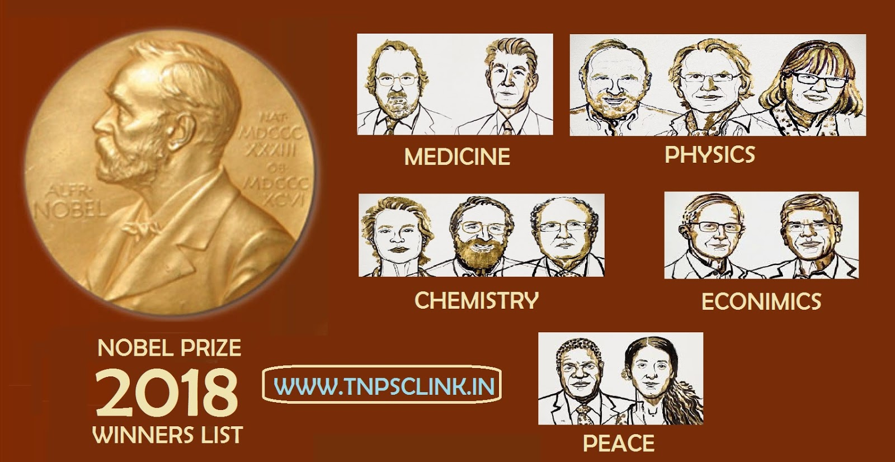
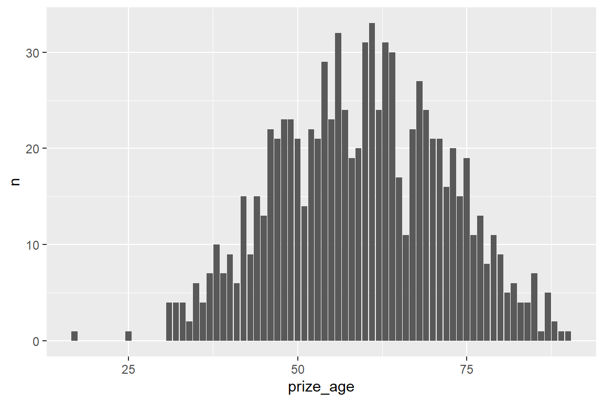
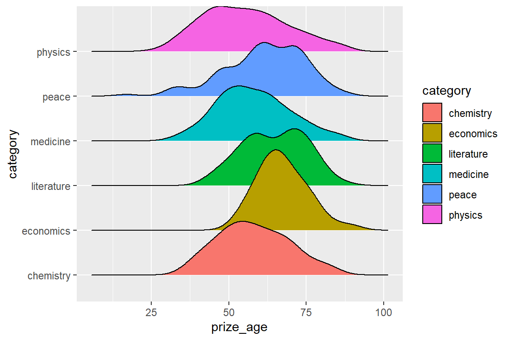
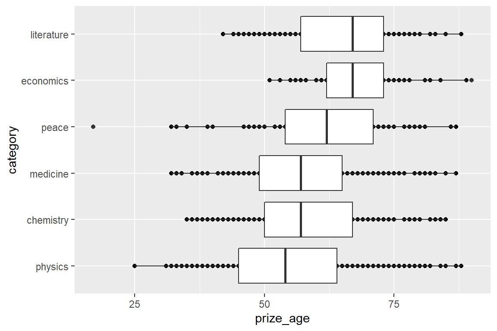
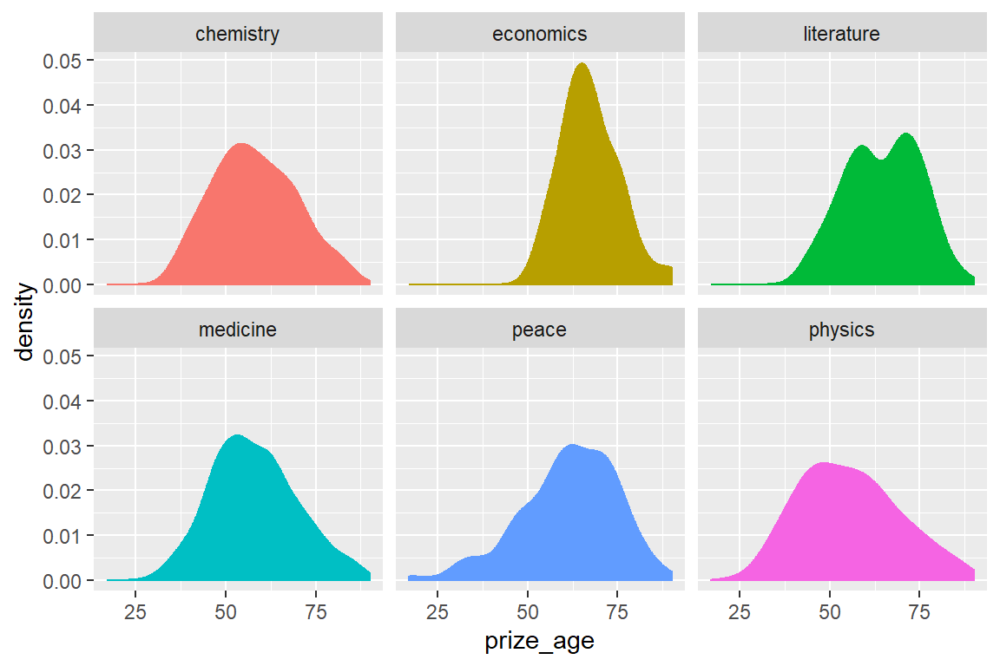
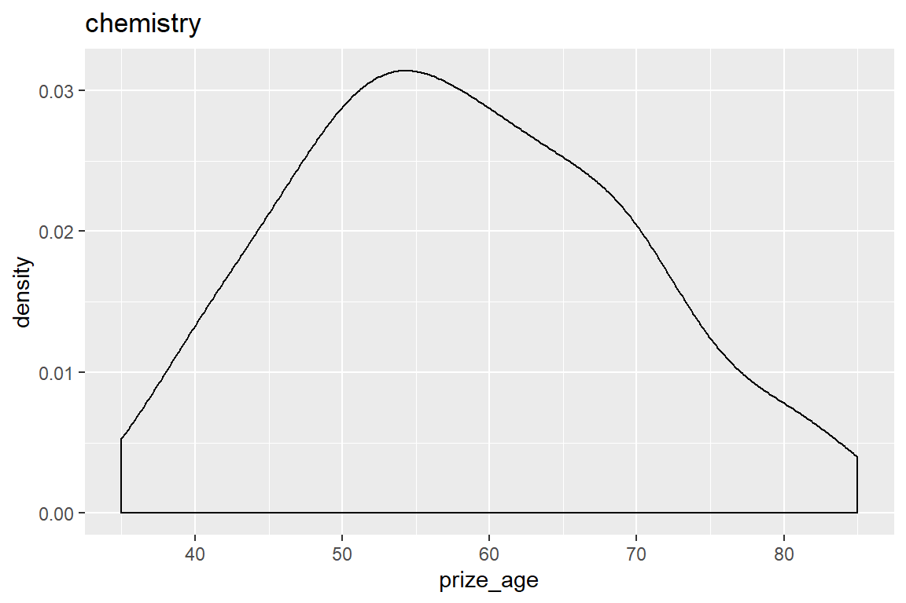
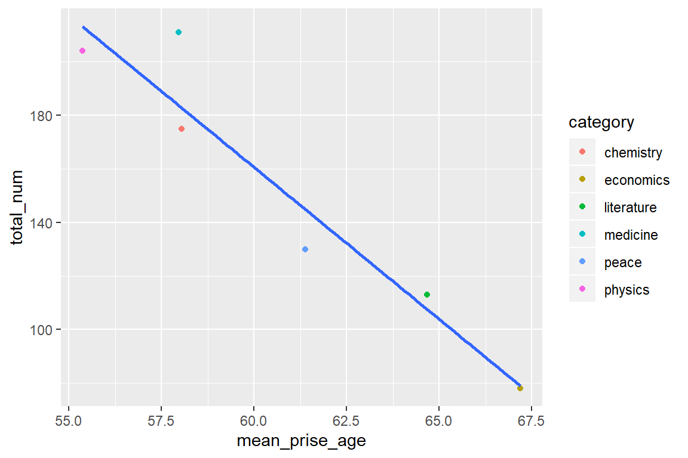
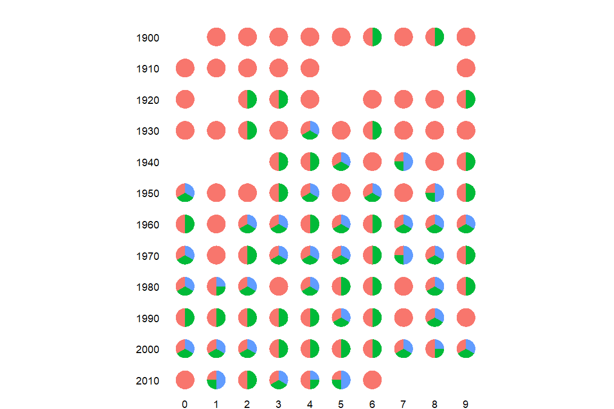

第 9 章 探索性数据分析
探索性数据分析（exporatory data analysis）是各种知识的综合运用。本章通过一个案例，讲解探索性数据分析的基本思路，也算是对前面几章内容的一次总结复习。
9.1 探索性
数据准备（对数据要做到心中有数）
- 描述变量
- 数据结构
- 缺失值及其处理
数据探索（围绕探索的目标）
- 数据规整
- 可视化
- 建模
9.2 数据集
这是一个诺贝尔奖获得者的数据集，

9.4 数据结构
一行就是一个诺奖获得者的记录? 确定？
缺失值及其处理
性别缺失怎么造成的？
9.5 我们想探索哪些问题？
你想关心哪些问题，可能是
- 每个学科颁过多少次奖？
- 这些大神都是哪个年代的人？
- 性别比例
- 平均年龄和获奖数量
- 最年轻的诺奖获得者是谁？
- 中国诺奖获得者有哪些？
- 得奖的时候多大年龄？
- 获奖者所在国家的经济情况？
- 有大神多次获得诺贝尔奖，而且在不同科学领域获奖？
- 出生地分布？工作地分布？迁移模式？
- GDP经济与诺奖模型？
- 诺奖分享情况？
9.6 每个学科颁过多少次奖
df %>%
count(category) %>%
ggplot(aes(x = category, y = n, fill = category)) +
geom_col() +
geom_text(aes(label = n), vjust = -0.25) +
labs(title = "不同学科诺贝奖获奖次数对比", x = "学科", y = "数量") +
theme(legend.position = "none")
df %>%
count(category) %>%
ggplot(aes(x = fct_reorder(category, n), y = n, fill = category)) +
geom_col() +
geom_text(aes(label = n), vjust = -0.25) +
labs(title = "不同学科诺贝奖获奖次数对比", x = "学科", y = "数量") +
theme(legend.position = "none")
也可以使用别人定义好的配色方案
library(ggthemr) # install.packages("devtools")
# devtools::install_github('cttobin/ggthemr')
ggthemr('dust')
df %>%
count(category) %>%
ggplot(aes(x = fct_reorder(category, n), y = n, fill = category)) +
geom_col() +
labs(title = "不同学科诺贝奖获奖次数对比", x = "学科", y = "数量") +
theme(legend.position = "none")
这个配色方案感觉挺好看的呢，比较适合我这种又挑剔又懒惰的人。
当然，也可以自己DIY，或者使用配色网站的主题方案(https://learnui.design/tools/data-color-picker.html#palette)
df %>%
count(category) %>%
ggplot(aes(x = fct_reorder(category, n), y = n)) +
geom_col(fill = c("#003f5c", "#444e86", "#955196", "#dd5182", "#ff6e54", "#ffa600")
) +
labs(title = "不同学科诺贝奖获奖次数对比", x = "学科", y = "数量") +
theme(legend.position = "none")
让图骚动起来吧
library(gganimate) #install.packages("gganimate", dependencies = T)
df %>%
count(category) %>%
mutate(category = fct_reorder(category, n)) %>%
ggplot(aes(x = category, y = n)) +
geom_text(aes(label = n), vjust = -0.25) +
geom_col(fill = c("#003f5c", "#444e86", "#955196", "#dd5182", "#ff6e54", "#ffa600")
) +
labs(title = "不同学科诺贝奖获奖次数对比", x = "学科", y = "数量") +
theme(legend.position = "none") +
transition_states(category) +
shadow_mark(past = TRUE)
和ggplot2的分面一样，动态图可以增加数据展示的维度。
9.7 看看我们伟大的祖国
我们发现获奖者有多个地址，就会有重复的情况，比如 Charles Kuen Kao在2009年Physics有两次，为什么重复计数了呢？
下面我们去重吧， 去重可以用distinct()函数
nobel_winners <- df %>%
mutate_if(is.character, tolower) %>%
distinct_at(vars(full_name, prize_year, category), .keep_all = TRUE) %>%
mutate(decade = 10 * (prize_year %/% 10),
prize_age = prize_year - year(birth_date))
nobel_winners这是时候，我们才对数据有了一个初步的了解
再来看看我的祖国
9.8 哪些大神多次获得诺贝尔奖
nobel_winners %>%
group_by(full_name) %>%
mutate(
number_prize = n(),
number_cateory = n_distinct(category)
) %>%
arrange(desc(number_prize), full_name) %>%
filter(number_cateory == 2) 9.9 大神在得奖的时候是多大年龄？

nobel_winners %>%
mutate(category = fct_reorder(category, prize_age, median, na.rm = TRUE)) %>%
ggplot(aes(category, prize_age)) +
geom_point() +
geom_boxplot() +
coord_flip()
nobel_winners %>%
filter(!is.na(prize_age)) %>%
group_by(decade, category) %>%
summarize(average_age = mean(prize_age),
median_age = median(prize_age)) %>%
ggplot(aes(decade, average_age, color = category)) +
geom_line()
library(ggridges)
nobel_winners %>%
ggplot(aes(x = prize_age,
y = category,
fill = category)) +
geom_density_ridges()
他们60多少岁才得诺奖，大家才23或24岁，还年轻，不用焦虑喔。
nobel_winners %>%
ggplot(aes(x = prize_age, fill = category, color = category)) +
geom_density() +
facet_wrap(vars(category)) +
theme(legend.position = "none")
有同学说要一个个的画，至于group_split()函数，下次课在讲
nobel_winners %>%
group_split(category) %>%
map(
~ ggplot(data = .x, aes(x = prize_age)) +
geom_density() +
ggtitle(.x$category)
)## [[1]]
##
## [[2]]
##
## [[3]]
##
## [[4]]
##
## [[5]]
##
## [[6]]
也可以用强大的group_by() + group_map()组合，我们会在第 21 章讲到
9.10 性别比例
nobel_winners %>%
filter(laureate_type == "individual") %>%
count(category, gender) %>%
group_by(category) %>%
mutate(prop = n / sum(n)
)各年代性别比例
nobel_winners %>%
filter(laureate_type == "individual") %>%
# mutate(decade = glue::glue("{round(prize_year - 1, -1)}s")) %>%
count(decade, category, gender) %>%
group_by(decade, category) %>%
mutate(prop = n / sum(n)) %>%
ggplot(aes(decade, category, fill = prop)) +
geom_tile(size = 0.7) +
#geom_text(aes(label = scales::percent(prop, accuracy = .01))) +
geom_text(aes(label = scales::number(prop, accuracy = .01))) +
facet_grid(vars(gender)) +
scale_fill_gradient(low = "#FDF4E9", high = "#834C0D")
library(ggbeeswarm)#install.packages("ggbeeswarm")
nobel_winners %>%
ggplot(aes(x = category,
y = prize_age,
colour = gender,
alpha = gender)) +
ggbeeswarm::geom_beeswarm() +
coord_flip() +
scale_color_manual(values = c("#BB1288", "#5867A6")) +
scale_alpha_manual(values = c(1, .4)) +
theme_minimal() +
theme(legend.position = "top") +
labs(title = "诺奖获得者性别不平衡",
subtitle = "1901年-2016年数据",
colour = "Gender",
alpha = "Gender",
x = "学科",
y = "获奖年龄")
nobel_winners %>%
count(decade,
category,
gender = coalesce(gender, laureate_type)) %>%
group_by(decade, category) %>%
mutate(percent = n / sum(n)) %>%
ggplot(aes(decade, n, fill = gender)) +
geom_col() +
facet_wrap(~ category) +
labs(x = "Decade",
y = "# of nobel prize winners",
fill = "Gender",
title = "Nobel Prize gender distribution over time")
9.11 这些大神都是哪个年代出生的人？
nobel_winners %>%
select(category, birth_date) %>%
mutate(year = floor(year(birth_date)/10) * 10 ) %>%
count(category, year) %>%
filter(!is.na(year)) %>%
ggplot(aes(x = year, y = n)) +
geom_col() +
scale_x_continuous(breaks = seq(1810, 1990, 20)) +
geom_text(aes(label = n), vjust = -0.25) +
facet_wrap(vars(category))
课堂练习，哪位同学能把图弄得好看些？
9.12 最年轻的诺奖获得者？
9.13 平均年龄和获奖数量
df1 <- nobel_winners %>%
group_by(category) %>%
summarise(
mean_prise_age = mean(prize_age, na.rm = T),
total_num = n()
)
df1df1 %>%
ggplot(aes(mean_prise_age, total_num)) +
geom_point(aes(color = category)) +
geom_smooth(method = lm, se = FALSE)
9.14 出生地与工作地分布
nobel_winners_clean <- nobel_winners %>%
mutate_at(
vars(birth_country, death_country),
~ ifelse(str_detect(., "\\(" ), str_extract(., "(?<=\\().*?(?=\\))" ), .)
) %>%
mutate_at(
vars(birth_country, death_country),
~ case_when(
. == "scotland" ~ "united kingdom",
. == "northern ireland" ~ "united kingdom",
str_detect(., "czech") ~ "czechia",
str_detect(., "germany") ~ "germany",
TRUE ~ .
)
) %>%
select(full_name, prize_year, category, birth_date, birth_country, gender, organization_name, organization_country, death_country)9.15 迁移模式
nobel_winners_clean %>%
mutate(
colour = case_when(
death_country == "united states of america" ~ "#FF2B4F",
death_country == "germany" ~ "#fcab27",
death_country == "united kingdom" ~ "#3686d3",
death_country == "france" ~ "#88398a",
death_country == "switzerland" ~ "#20d4bc",
TRUE ~ "gray60"
)
) %>%
ggplot(aes(
x = 0,
y = fct_rev(factor(birth_country)),
xend = death_country,
yend = 1,
colour = colour,
alpha = (colour != "gray60")
)) +
geom_curve(curvature = -0.5,
arrow = arrow(length = unit(0.01, "npc"))) +
scale_x_discrete() +
scale_y_discrete() +
scale_color_identity() +
scale_alpha_manual(values = c(0.1, 0.2), guide = F) +
scale_size_manual(values = c(0.1, 0.4), guide = F) +
theme_minimal() +
theme(
panel.grid = element_blank(),
plot.background = element_rect(fill = "#F0EFF1", colour = "#F0EFF1"),
legend.position = "none",
axis.text.x = element_text(angle = 40, hjust = 1)
) 
9.16 地图
library(here)
library(sf)
library(countrycode)
#countrycode('Albania', 'country.name', 'iso3c')
nobel_winners_birth_country <- nobel_winners_clean %>%
count(birth_country) %>%
filter(!is.na(birth_country)) %>%
mutate(ISO3 = countrycode(birth_country,
origin = "country.name", destination = "iso3c"))
global <-
sf::st_read("./demo_data/worldmap/TM_WORLD_BORDERS_SIMPL-0.3.shp") %>%
st_transform(4326)## Reading layer `TM_WORLD_BORDERS_SIMPL-0.3' from data source `H:\R_for_Data_Science\demo_data\worldmap\TM_WORLD_BORDERS_SIMPL-0.3.shp' using driver `ESRI Shapefile'
## Simple feature collection with 246 features and 11 fields
## geometry type: MULTIPOLYGON
## dimension: XY
## bbox: xmin: -180 ymin: -90 xmax: 180 ymax: 83.57
## epsg (SRID): 4326
## proj4string: +proj=longlat +datum=WGS84 +no_defsglobal %>%
full_join(nobel_winners_birth_country, by = "ISO3") %>%
ggplot() +
geom_sf(aes(fill = n),
color = "white",
size = 0.1
) +
labs(
x = NULL, y = NULL,
title = "Nobel Winners by country",
subtitle = "color of map indicates number of Nobel lauretes",
fill = "num of Nobel lauretes",
caption = "Made: wang_minjie"
) +
scale_fill_gradientn(colors = c("royalblue1","magenta","orange","gold"), na.value = "white") +
#scale_fill_gradient(low = "wheat1", high = "red") +
theme_void() +
theme(
legend.position = c(0.1, 0.3),
plot.background = element_rect(fill = "gray")
)
# Determine to 10 Countries
topCountries <- nobel_winners_clean %>%
count(birth_country, sort = TRUE) %>%
na.omit() %>%
top_n(8)
topCountriesdf4 <- nobel_winners_clean %>%
filter(birth_country %in% topCountries$birth_country) %>%
group_by(birth_country, category, prize_year) %>%
summarise(prizes = n()) %>%
mutate(cumPrizes = cumsum(prizes))
df4library(gganimate)
df4 %>%
mutate(prize_year = as.integer(prize_year)) %>%
ggplot(aes(x = birth_country, y = category, color = birth_country)) +
geom_point(aes(size = cumPrizes), alpha = 0.6) +
#geom_text(aes(label = cumPrizes)) +
scale_size_continuous(range = c(2, 30)) +
transition_reveal(prize_year) +
labs(title = '诺奖获得者最多的10个国家',
subtitle = "Year: {frame_along}",
y = 'Category') +
theme_minimal() +
theme(
plot.title = element_text(size = 22),
axis.title = element_blank()) +
scale_color_brewer(palette = "RdYlBu") +
theme(legend.position = "none") +
theme(plot.margin = margin(5.5, 5.5, 5.5, 5.5))
9.17 出生地和工作地不一样的占比
nobel_winners_clean %>%
select(category, birth_country, death_country) %>%
mutate(immigration = if_else(birth_country == death_country, 0, 1))9.18 诺奖分享者
nobel_winners %>%
filter(category == "medicine") %>%
mutate(num_a = as.numeric(str_sub(prize_share, 1, 1)),
num_b = as.numeric(str_sub(prize_share, -1)),
share = num_a/num_b,
year = prize_year %% 10,
decade = 10 * (prize_year %/% 10)
) %>%
group_by(prize_year) %>%
mutate(n = row_number()) %>%
ggplot() +
geom_col(aes(x = "", y = share, fill = as.factor(n)),
show.legend = FALSE
) +
coord_polar("y") +
facet_grid(decade ~ year, switch = "both") +
labs(title = "每年诺贝尔奖分享情况") +
theme_void() +
theme(
plot.title = element_text(face = "bold", vjust = 8),
strip.text.x = element_text(size = 7,
margin = margin(t = 5)),
strip.text.y = element_text(size = 7,
angle = 180, hjust = 1, margin = margin(r = 10))
)
9.19 其它
没有回答的问题，大家自己花时间探索下。
9.20 延伸阅读
- 有些图可以再美化下